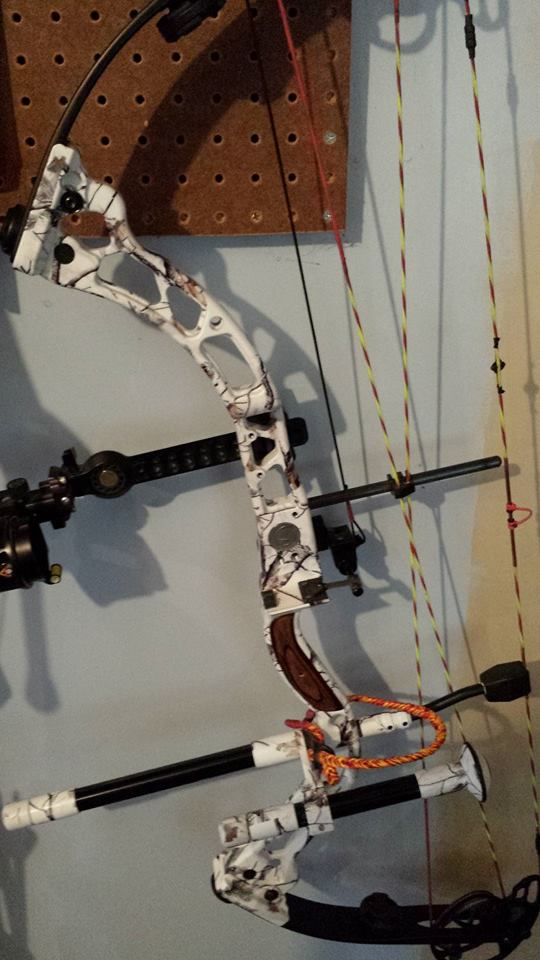
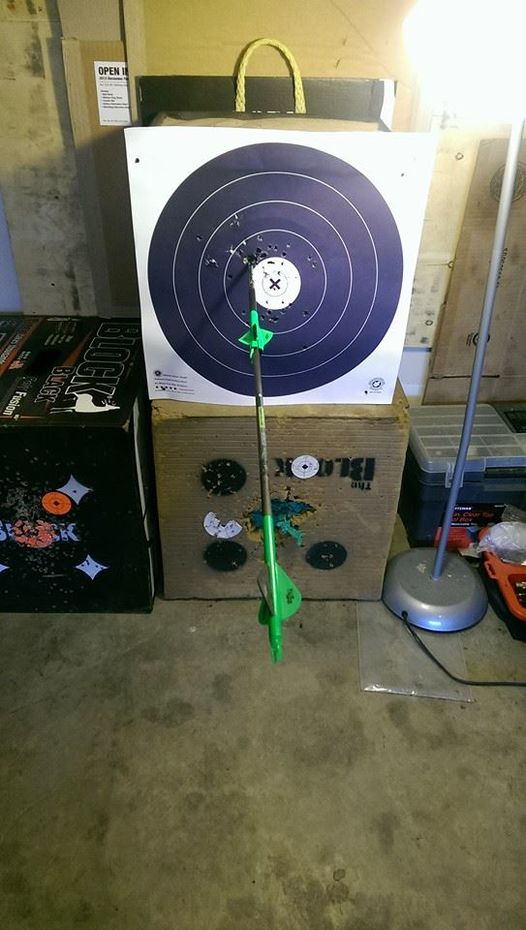
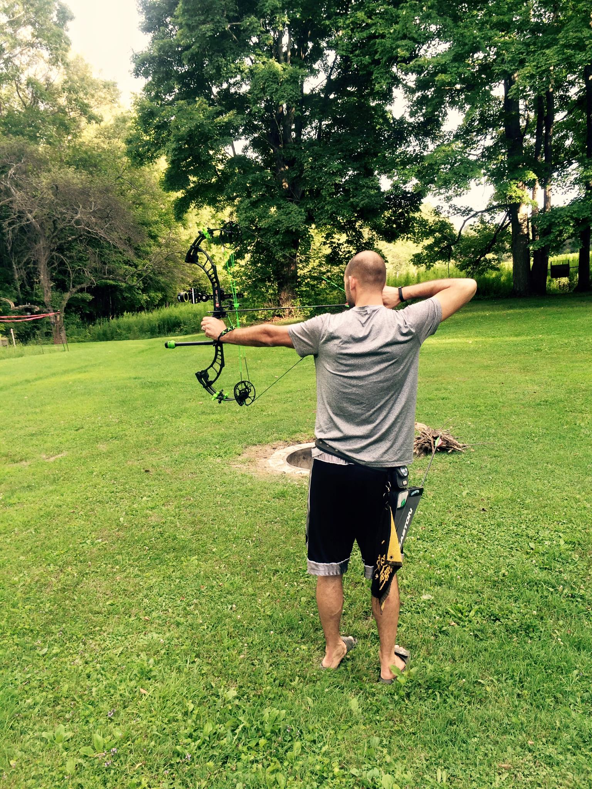
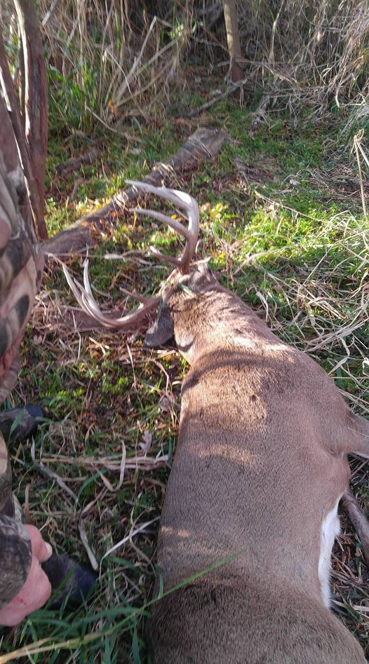

Customer Reviews
Josi Strange - Thank you Uncle Ronnie! You Rock!
Kevin McCall - March 23, 2014 · Had RJS Outdoors put a set of Korbins Custom strings on my Elite Pure a couple months ago. I have 750+ shots on them and the peep hasn't moved!!!! Good strings, good tuning!!! Thanks Ron Marriott!!! Keep up the good work!!!
Jason Kuonen - August 26, 2014 I'd say RJS can tune bows! Jus sayin.
Jason Hanes - Got my custom RJS Outdoors PSE Bowmadness 34 today !
Jason Kuonen - Another thank you to the fellas at RJS Outdoors for all they're help throughout the years and helping me locate this Buck I feel very thankful to have great friends!
